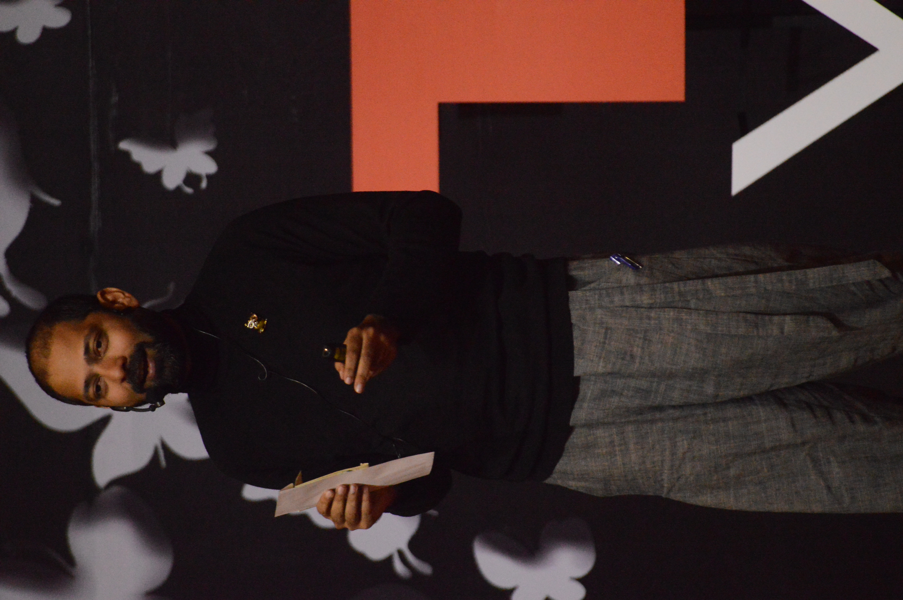

I am colour-blind, I just see the world differently:Mr.Mayur Varma- Executive creative director of the ogilvy group.
Mr Varma is the Winner of the prestigious Cannes Design Gold Lion Award amongst many other international and national advertising awards. A creative director, Mr Mayur Varma who was once prevented from doing
marvellous things because of his colour-blindness. Today,he thanks fate for
his disability since he believes it is his gift. In his TED talk he takes the audience through the journey of how he discovered his disability in the 3rd grade and also shares a few of his ideas as a colour blind person in the advertising industry. He talks about his various campaigns with Vodafone, NGO‘s and how they were highly popular even on platforms such as twitter and Instagram. Mayur Verma inspires people with flaws to stand on it the way he did and find a life changing idea. He asks people to change themselves so that their self doubt is overcome by passion.